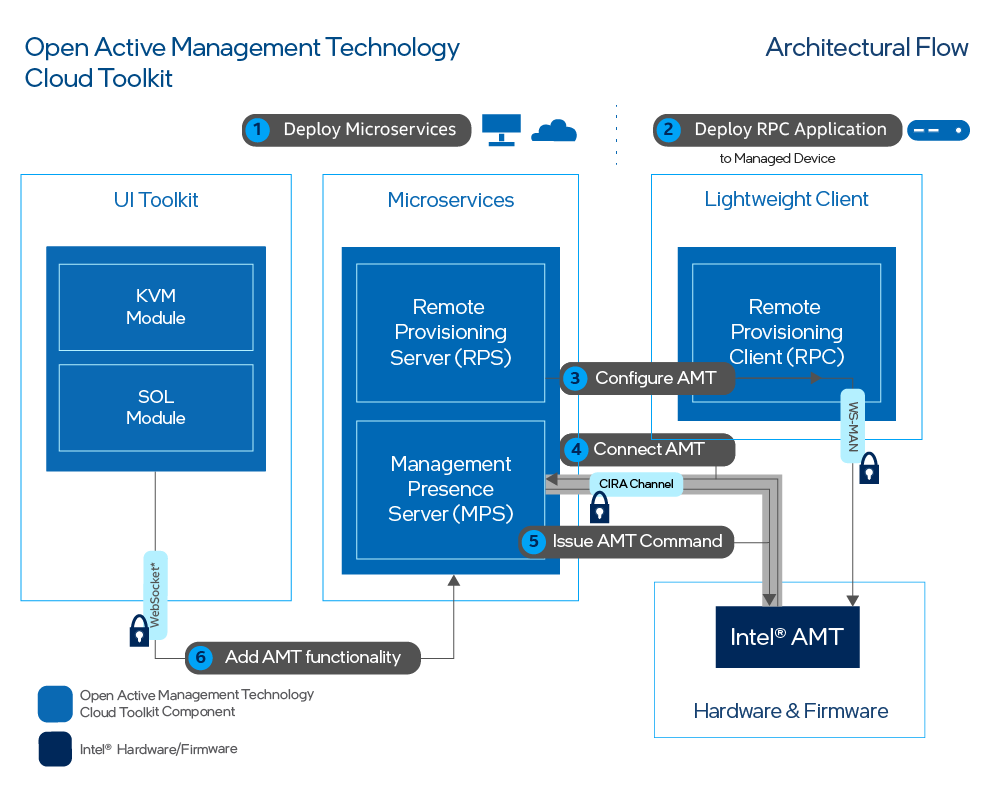

Overview
Figure 1 illustrates the high-level architecture of Open AMT Cloud Toolkit microservice architecture.

Figure 1: Deploy Open AMT Cloud Toolkit
Figure 1 illustrates the high-level steps for basic deployment:
- Deploy Microservices - Install the microservices on a development system as Docker* containers, which can run locally or on the cloud.
- Deploy RPC Architecture - Transfer the lightweight clients to managed devices.
- Configure AMT - Through the RPS, configure AMT by creating control mode profile(s).
- Connect AMT - Use the MPS to manage connectivity, as this microservice listens for the call home messaging of managed devices.
- Issue AMT Command - Send power commands (e.g., power off) through the MPS.
- Add AMT functionality - Explore the additional functionality provided by Open AMT Cloud Toolkit to develop your own web console or application.
Out-of-band Management (OOB Management)¶
Open AMT Cloud Toolkit uses remote management technology, also known as OOB Management, to allow administrators to perform actions on network assets or devices using a secure alternative to LAN-based communication protocols. Actions include reboot, power up, power down, system updates, and more. As long as the network device or asset is connected to power, Open AMT Cloud Toolkit software can perform remote management, including powering up as a system that is currently powered down.
Remote management can offer potential cost-savings by decreasing the need for in-person technician visits to remote IT sites and reducing downtime.
What's the difference between in-band and OOB Management?¶
Remote monitoring and management software solutions often require the managed devices to be in the powered on state. The IT administrator connects to and updates the managed device while it is in the powered on state.
With out-of-band management, the administrator can connect to the device when it has been powered down or it is unresponsive.
CIRA Configuration¶
CIRA enables OOB connections between Intel® AMT platforms and administrative development systems running Open AMT on the same network.
The following steps occur via a CIRA channel:
-
A remote Intel vPro® platform featuring Intel® AMT is activated and a CIRA configuration is applied. The remote platform is referred to as the managed device.
-
The managed device connects to the MPS and establishes an encrypted connection using Transport Layer Security (TLS)
-
The Intel vPro® platform maintains a long standing connection with the MPS through the use of small keep-alive messages to the MPS.
-
A management console sends a command to the MPS, via provided RESTful interfaces, with the command indicating the managed device should take some action.
-
The MPS authenticates the RESTful command and proxies the command for the management console to the managed device.
The MPS handles the authentication process with the managed device.
Control Mode Profile¶
Managed devices featuring Intel® AMT support two control modes:
-
Admin Control Mode (ACM): In this mode, there are no limitations to Intel® AMT functionality. This reflects the higher level of trust associated with these setup methods. No user consent is required.
-
Client Control Mode (CCM): This mode limits some of Intel® AMT functionality, reflecting the lower level of trust.
Features requiring User Consent:
- Keyboard, Video, Mouse (KVM) Control
- IDE-Redirection for sharing and mounting images remotely
Domains¶
In addition to a CIRA Config and an ACM Profile, ACM requires the creation of a Domain Profile.
Intel® AMT checks the network DNS suffix against the provisioning certificate as a security check. During provisioning, the trusted certificate chain is injected into the AMT firmware. Intel® AMT verifies that the certificate chain is complete and is signed by a trusted certificate authority.
Power Control¶
With the established CIRA channel, Open AMT Cloud Toolkit enables the administrator to manage remote devices and trigger power actions to:
- power up
- power down
- power up to BIOS
- reset
- reset to BIOS
For more information about power states supported by the REST APIs, see Intel® AMT Implementation and Reference Guide for more details.
Keyboard, Video, Mouse (KVM) Control¶
Intel® AMT enables remote management of a device, even when the OS isn't running, through KVM over IP support. No additional equipment is needed for this feature. With KVM control, IT administrators can access and update PCs and devices as if they were onsite. It eliminates the need for remote KVM switches and other hardware.
Log Files¶
Each microservice has an associated log file which can contain helpful debug information. Use docker logs to print log information to the terminal.
Docker Logs¶
To run docker log files in a terminal window as needed:
-
Open a Terminal or Powershell/Command Prompt and run the command to list the containers:
sudo docker psdocker ps -
Copy the first three digits of the container ID of interest. Run the docker logs command followed by the container ID:
sudo docker logs <container ID>docker logs <container ID>
See more help options for the docker logs command in Docker Documentation.
Log Level¶
Set the log levels in the .env file by altering the configuration levels, MPS_LOG_LEVEL and RPS_LOG_LEVEL. Find the log level descriptions in the tables contained in MPS Configuration and RPS Configuration.